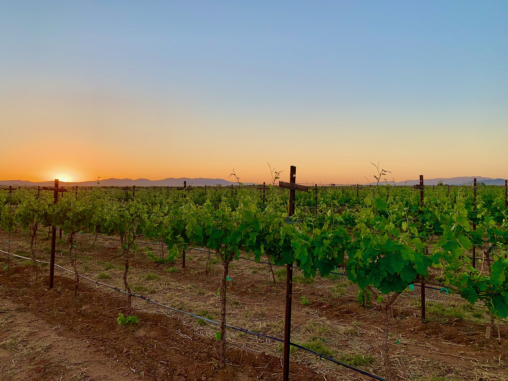

We are the same. We want to experience the best wineries in Sedona. Buckle in because you will not be disappointed. When most people think about Sedona, Arizona, they picture towering red rocks, incredible hiking trails, and those gorgeous desert sunsets. And listen, I get it. Sedona is absolutely beautiful. But here's something that might surprise you: there's an entire wine country practically in Sedona's backyard.
Yes, WINE COUNTRY. In Arizona!
If you've spent the morning hiking, exploring art galleries, or wandering around town, spending your afternoon with a glass of locally produced wine overlooking a vineyard sounds like a pretty fantastic way to end the day.
The great thing about Sedona wineries is that you don't have to be a wine expert to enjoy them. Whether you're planning a romantic weekend, a girls' trip, or you are solo dolo like myself!
I'm going to walk you through where to go, what makes each location special, and how to plan a day without spending half your vacation driving around.
Here's what you need to understand before planning your trip. Most of the actual vineyards aren't located within Sedona city limits. The majority are in the surrounding Verde Valley, particularly around Cornville, Page Springs, and Cottonwood.
And that's not a bad thing! Why? There are stunning views, honey!
You're trading some of Sedona's tourist traffic for rolling vineyards, scenic country roads, and a completely different side of Arizona that many visitors never experience.
Most of the popular vineyards are approximately 20–40 minutes from central Sedona, depending on where you're going. So you can easily spend your morning exploring red rock country and your afternoon enjoying a tasting experience.
I'll admit, Arizona probably isn't the first state that comes to mind when someone mentions American wine regions. California? Absolutely. Oregon? Sure. But Arizona?
Well, you might be surprised.
The Verde Valley has become an established wine-producing region, with growers taking advantage of its elevation, sunshine, and varied growing conditions. The Verde Valley American Viticultural Area received federal recognition in 2021.
Arizona wines include everything from crisp whites and refreshing rosés to bold reds made with grapes such as Syrah, Grenache, and Tempranillo.
And part of the fun is discovering something you wouldn't normally pick up at your local grocery store.
If you're looking for a beautiful vineyard where you can spend a few hours rather than simply stopping for a quick tasting, Page Springs Cellars deserves a spot on your itinerary.
Located along Page Springs Road in Cornville, this winery offers a combination of beautiful scenery, outdoor seating, and an actual winemaking experience.
You can enjoy a flight, order food from the bistro, or take one of their guided winery tours. The setting is particularly enjoyable because Oak Creek runs alongside the property, creating a surprisingly green landscape in the middle of the desert.
And if you're someone who loves learning how things are made, their estate tour takes you behind the scenes, through the production areas and vineyard grounds.
Their guided estate tour typically lasts 60–90 minutes and includes five wines, including a barrel sample. It's an opportunity to learn about the winemaking process rather than simply having someone pour another glass.
There's also a bistro with picnic tables and a more substantial food selection than you'll find at some smaller tasting rooms.
My suggestion? Give yourself time here. Don't schedule a stop every 30 minutes and then spend the entire afternoon watching the clock.
If the goal is to unwind, actually give yourself permission to enjoy the place.
Just down the road, you'll find Oak Creek Vineyards, another stop along the area's well-known wine corridor.
This is one of those places that makes it relatively easy to build your own afternoon of wine tasting without constantly jumping between different towns.
You can explore their selection of wines and enjoy the laid-back setting. It's a nice addition to an itinerary that already includes Page Springs Cellars or one of the neighboring properties.
Because several wineries are concentrated along the same road, you don't have to turn the day into an elaborate production.
Personally, I like the idea of choosing two or three places, finding somewhere comfortable to sit, and letting the afternoon unfold naturally.
Another stop worth considering is Javelina Leap Vineyard & Winery, located along the same scenic route.
This family-owned operation offers a more traditional winery atmosphere, where visitors can learn about the wines and enjoy the property's garden and seating areas.
It's an appealing option if you want something that feels a little more personal than a large commercial operation.
Depending on the day's offerings, you may also find small bites, charcuterie, and desserts to accompany your tasting.
And here's my little reminder: you don't have to order an entire flight everywhere you go. Sometimes sharing a plate, purchasing a glass, and spending time outdoors is enough.
Now, if the atmosphere matters just as much as what's in your glass, take a look at D.A. Ranch.
This is a working ranch and estate vineyard with a historic barn, mature trees, green pastures, and a setting that feels completely removed from the busier parts of Sedona.
It's the kind of property where you could easily forget you're in the desert.
The ranch produces estate-grown wines and offers flights, glasses, and bottles. Depending on the day, visitors can also enjoy live music and food trucks.
Yes! Well-behaved dogs are welcome on leashes, although indoor access is restricted to service animals.
The property also hosts private events, so check the calendar before making the drive. Certain dates may have limited public access because of weddings or other celebrations.
For anyone who enjoys peaceful surroundings, this beautiful vineyard offers a different atmosphere from a downtown tasting room.
Cove Mesa Vineyard is another location to consider when exploring the Cornville area.
While some Arizona wineries lean heavily into rustic ranch aesthetics, Cove Mesa offers a more contemporary approach to its hospitality and wine presentation.
It's an option for travelers who appreciate a comfortable setting, thoughtful wine selections, and something to eat alongside their drinks.
The winery has a tasting location in Cornville, along with a presence in Cottonwood, so confirm which location you're visiting before heading out.
One thing I always recommend when planning a wine-focused afternoon is checking the available food. Some locations offer a full menu, while others have cheese plates or lighter selections.
That matters when you're planning several stops over the course of an afternoon.
If you enjoy a little adventure with your wine, Alcantara Vineyards offers something different.
Located near Cottonwood, where Oak Creek meets the Verde River, this property combines vineyards, expansive outdoor grounds, and beautiful views of the surrounding landscape.
You can enjoy a tasting, explore the designated visitor areas, or arrange an additional activity through one of the independent operators working with the vineyard.
Yes, and this is probably one of the most interesting combinations in the area.
Alcantara offers access to a water-to-wine kayaking experience through a third-party adventure company. Guests paddle along the river and finish near the vineyard, where they can continue their afternoon on the property.
Now THAT is a memorable afternoon.
The kayaking activity comes at an extra cost, and you'll want to reserve it in advance. If you would rather stay on dry land, Alcantara also offers tastings and complimentary short vineyard tours on scheduled days.
The property is dog-friendly for leashed pets, too.
Let's talk about food, because not everyone wants to survive an entire day on crackers and tiny tasting portions.
Merkin Vineyards Hilltop Winery & Trattoria in Cottonwood combines Arizona wine with a full-service restaurant experience.
The property overlooks the surrounding landscape and includes a production facility, vineyard, and restaurant emphasizing Arizona ingredients.
Think freshly prepared pasta, pizza, shareable dishes, and wines that complement your meal.
If you're traveling with someone who isn't particularly interested in wine, this is an appealing option because the restaurant is an experience on its own.
You can plan an actual lunch or dinner here rather than treating food as an afterthought.
Here's something I think more visitors should know: you don't necessarily need to visit several vineyards to have an enjoyable wine-centered afternoon.
Old Town Cottonwood has a collection of local tasting rooms, restaurants, boutiques, and historic buildings concentrated within a walkable downtown area.
This is particularly convenient if you're interested in sampling wines from different producers without driving from property to property.
Park, wander around, browse the shops, and stop wherever something catches your attention.
You can find establishments such as Arizona Stronghold, Burning Tree Cellars, and other nearby producers offering different wine styles and atmospheres.
Because sometimes the destination itself is part of the experience.
Rather than spending the entire day traveling between locations, you can enjoy the historic downtown, grab a meal, and explore several places within a few blocks.
It's also a nice change of scenery if you've already spent several days exploring Sedona's galleries, trails, and popular attractions.
Just remember that walking between tasting rooms doesn't solve the question of how you're getting back to your accommodations. Plan for a designated driver or transportation service.
What if you want to explore Arizona wine but don't particularly feel like driving into the countryside?
There are a few options right in Sedona.
Vino Zona is located in the charming Tlaquepaque Arts & Shopping Village, making it easy to combine an afternoon of shopping with a tasting.
The shop focuses on small-batch Arizona wines, including selections from producers you might not otherwise discover.
I love the concept of a place like this because you can learn about regional winemaking without committing an entire day to a winery excursion.
And Tlaquepaque itself is worth exploring, with its courtyards, galleries, specialty shops, and architecture inspired by a traditional Mexican village.
If you're looking for somewhere to unwind after a long day of activities, Vino di Sedona is another option.
Located in West Sedona, this wine bar offers a broad wine selection, food, and scheduled entertainment.
It's not an estate vineyard, and that's perfectly fine. Sometimes what you want is a comfortable seat, a good drink, and somewhere to spend the evening.
Their menu includes options such as flatbreads, charcuterie, and tapas-style dishes.
This can be an enjoyable stop after all the hiking and sightseeing, especially when you're not interested in driving another half hour to a rural winery.
Now we get to one of the biggest planning questions: should you drive yourself or book a guided excursion?
There isn't one answer that works for everybody.
If you're mainly interested in visiting a single winery, spending a few hours there, and returning to your vacation rental, driving yourself with a sober driver may be perfectly practical.
But if your goal is to sample wines at several properties, transportation becomes a much more important part of the experience.
Sedona wine tours can take the responsibility of navigating unfamiliar roads off your plate, allowing you to focus on enjoying the afternoon.
It depends entirely on the operator.
Some packages include round trip transportation from your Sedona accommodations, visits to multiple wineries, and a driver or guide.
Others may charge separately for tastings, meals, gratuities, and purchases.
Before booking, find out exactly what's included. A lower-priced tour isn't necessarily cheaper once you've added tasting fees and transportation charges.
Also, check how much time you'll actually have at each property. Visiting four wineries sounds fantastic until you discover that most of the afternoon is spent in a vehicle.
Comparing first? Start with the two most-booked options: the Verde Valley Wine Tour (four vineyards by limo-style bus, from $109) and the All-Inclusive Sedona Wine Tour — or see our full Sedona wine tours page for private and small-group options.
Private Sedona vineyard tours are worth considering when you're traveling with friends, celebrating something special, or simply want more flexibility.
A private experience may allow you to select particular stops, adjust your schedule, and enjoy the day without coordinating with a large group.
That can be especially convenient for a birthday celebration or a group of friends with different interests.
However, private experiences generally cost more than shared group excursions, and the wineries themselves may require separate reservations for larger parties.
Ask about group size, pickup locations, tasting fees, and cancellation policies before committing.
The cost depends on the location and the type of experience you're choosing.
A simple tasting flight will generally cost less than a guided estate tour with access to production areas and specialty pours.
For example, Page Springs Cellars advertises a guided estate tour with tastings for approximately $45 per person, although rates and availability can change.
Alcantara offers paid tastings alongside complimentary short winery tours on select days.
You'll also need to account for any transportation, restaurant meals, bottles to take home, and optional activities.
My advice is to decide what you're actually interested in paying for. There's no reason to book an expensive package if all you really want is a beautiful patio and one glass of something local.
Spring and fall are especially appealing because the weather can be comfortable for outdoor tastings and vineyard visits.
Spring brings greener scenery and generally pleasant daytime temperatures, while late summer and early fall overlap with the grape harvest season.
Harvest can be an interesting time to visit because some wineries offer special tours or activities related to the winemaking process.
However, fall is also a busy season for tourism, so popular properties may be crowded during weekends.
If your schedule allows, consider visiting during the week. You may find a more relaxed atmosphere and have an easier time finding seating.
Summer visits are possible, but Arizona afternoons can get hot. Check for indoor seating, shade, and air-conditioned spaces before planning a full outdoor itinerary.
You can enjoy wine in Sedona without a vehicle, particularly by visiting local wine bars and shops.
But reaching the actual vineyards requires more planning.
Public transportation between Sedona and Cottonwood may help with part of your journey, although it won't necessarily take you directly to individual rural properties.
Old Town Cottonwood is relatively pedestrian-friendly once you arrive, making it easier to explore several locations without driving between them.
For the vineyard corridor, a guided excursion or arranged driver may be the more practical option.
Just don't assume rideshare availability will be the same in Cornville as it is in a major city. Arrange your return transportation before you start tasting.
One thing I appreciate about this region is that enjoying the scenery doesn't require everyone in your group to be interested in alcohol.
Some wineries welcome families, and certain properties offer food, outdoor grounds, and nonalcoholic drink selections.
DA Ranch, for example, lists nonalcoholic beverages, while Alcantara welcomes visitors of different ages.
That doesn't mean every winery experience is designed for children, though. Guided production tours may have minimum-age requirements.
Page Springs Cellars does not permit children under 12 on its winery tours.
Check each property's policies before booking, especially if you're traveling with younger children or pets.
If I were putting together a day focused on the vineyards, I'd keep things relatively simple.
Start with a leisurely breakfast in Sedona, then head toward the Cornville and Page Springs area in late morning.
Choose one winery for a guided experience, followed by lunch and another stop where you can relax and enjoy the scenery.
Page Springs Cellars, Oak Creek Vineyards, and Javelina Leap are geographically convenient options because they're located along the same road.
You could also substitute D.A. Ranch if the property's outdoor atmosphere or events interest you.
Finish the afternoon with a return to Sedona, giving yourself time to enjoy dinner, catch the sunset, or simply relax.
The goal isn't to collect as many winery stops as possible. It's to enjoy the experience without feeling rushed.
If wine is one of the main reasons for your visit, consider dividing your itinerary into two separate areas.
Spend the first day exploring the Cornville vineyards. You can combine a guided tasting with a leisurely meal and time outdoors.
On your second day, head toward Cottonwood and explore the downtown shops, restaurants, and wine establishments.
You could also add Alcantara Vineyards, particularly if you're interested in the river scenery or an outdoor adventure.
If you're considering Camp Verde or nearby attractions, look at the driving distances before adding them to an already full day.
There's plenty to explore, but you don't need to see everything in one weekend.
There are several options! SIP Sedona offers affordable group tours starting around $90, while Enchantment Resort offers more luxurious private experiences. It really depends on your budget and how much you want included.
You've got options for every budget. Sky Ranch Lodge has gorgeous views, Arabella is a nice mid-range choice, and Amara Resort and Spa offers a little luxury. For something more affordable, check out Baby Quail Inn.
Arizona makes some surprisingly good wine! You'll find Syrah, Sangiovese, Barbera, Malvasia Bianca, Cabernet Sauvignon, and Viognier. The region's elevation, volcanic soils, and warm days help create some interesting flavors.
Absolutely! Many wineries have shaded patios, picnic tables, and beautiful views of vineyards or rivers. Honestly, sitting outside with a glass of wine and enjoying the scenery is half the experience.
Plan on spending around $12–$25 for a typical wine flight, although some experiences cost more. Guided winery tours can run $40–$60 or higher. Check current prices before visiting.
Sedona has several wine bars and tasting rooms, including Winery 1912. But most of the actual vineyards are about 20–40 minutes away in the Verde Valley. It's an easy afternoon trip!
Prices depend on the experience you choose. Their guided estate tour with five wine tastings is listed at $45 per person. You can also visit the tasting room without booking a full tour.
The atmosphere! You've got a gorgeous ranch setting, outdoor seating, animals on the property, and locally produced wines. It's a lovely place to spend an afternoon without feeling rushed.
Oak Creek Vineyards has offered affordable flights starting around $10, although prices can change. I'd check their current tasting menu before heading over.
March through May is a popular time because the weather is usually beautiful. Just expect more visitors! Fall is another lovely option, especially if you want to experience the grape harvest season.
You can absolutely visit in summer, but Arizona gets HOT! July and August also bring monsoon storms. I'd plan tastings earlier in the day or choose somewhere with indoor seating.
Yes! Winter is generally quieter, with daytime temperatures often in the 50s and 60s. You might need a jacket, but fewer crowds can make for a really relaxing afternoon.
Definitely! Alcantara Vineyards is known for its nearby kayaking-to-wine experience, and some companies combine vineyard visits with sightseeing or other adventures. It's a fun way to experience more than just the tasting rooms.
Wineries and Sedona wine tasting are available all year round. Many operate throughout the year, although hours and events can vary by season. Some close on particular weekdays or holidays, so always check the current schedule before visiting.
For scenic surroundings, look into D.A. Ranch, Page Springs Cellars, Alcantara Vineyards, and Merkin Vineyards. Each offers a different setting, from creekside greenery and ranch landscapes to elevated views over the valley.
Guided wine tours handle the roads between vineyards — you handle the tasting.